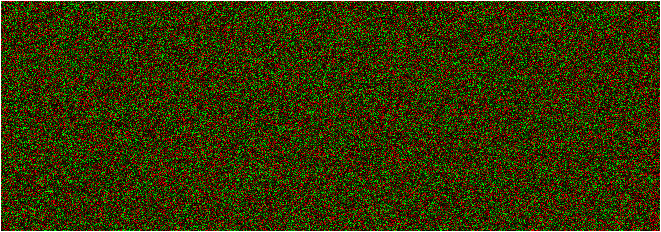

|
|
Manual |
Residuals from a fit can be visualized in a variety of ways. One particular sensitive way to display the residuals is by using a pixel map where the values of the residuals are represented by the color of the pixels. A random pattern of residuals will be easily distinguished from a pattern where systematic error is present. The images below are representative of different levels of systematic noise present in the fit with constant random noise. Here, the negative resisuals are displayed in red, and the positive residuals are displayed in green pixels. The larger the deviation, the brighter the red or green color tones are. Scans are represented as pixel rows, for each scan, a single pixel row applies. The uppermost pixel row represents the residuals of the first scan, and the lowest row represents the residuals of the last scan. Residuals close to zero are close to black:
|  | This image shows only random red and green deviations and therefore represents a perfect fit - no systematic errors can be detected. |

|
This image shows a slight diagonal, indicating the presence of a minor mismatch in the data and model. For most experimental situations this may be termed an acceptable fit. |

|
This image indicates the presence of major systematic noise by showing a prominent diagnonal, which is clearly indicative of an unaccepable fit. The lack of grainyness in this picture also indicates that no random noise is detected in this fit, in itself a clear indication that the fit is poor. |
This document is part of the
UltraScan Software Documentation distribution.
Copyright © notice.
The latest version of this document can always be found at:
Last modified on January 27, 2005.